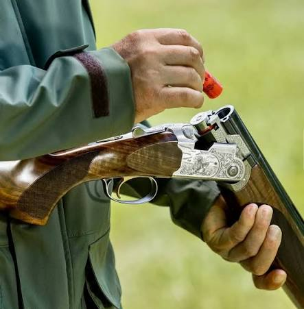
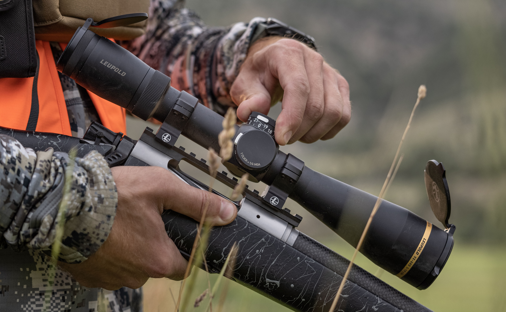
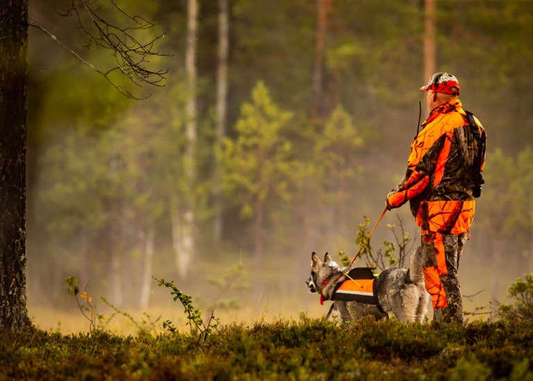

A DISTINCT DESTINATION
HUNTING & FIELDCRAFT
Explore four focused guides covering equipment, wildlife, seasons, and the places where hunting takes place.

01Hunting Rifles
Learn about hunting rifle types, features, safe handling, and sporting use.

02Hunting Equipment
Explore clothing, optics, field gear, and other practical outdoor equipment.
Animals & Hunting Season
Discover wildlife and understand why permitted seasons vary by species and location.

04Hunting Ground
Explore habitats, terrain, conservation, and responsible access to hunting areas.
DEDICATED CATEGORY This Hunting section is independent of Weapons ↗.